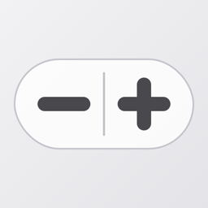

Privacy Policy
English
Countera does not collect, transmit, or share any personal data.
- Everything you create in Countera (groups, counters, true/false items, texts, history and My Colors) is stored only on your device, inside the app's shared container used by the app and its widgets.
- Countera has no account, no analytics, no advertising and no tracking, and it makes no network requests.
- Deleting the app deletes all of its data from your device.
If this policy changes, the updated version will be posted on this page.
Last updated: November 17, 2026
日本語
Countera は、個人のデータを集めることも、送ることも、ほかと共有することもありません。
- Countera で作ったもの(グループ、カウンター、true/false、テキスト、記録、マイカラー)は、すべてお使いの端末の中、アプリとウィジェットが使う共有の保存場所にだけ保存されます。
- アカウント、アクセス解析、広告、トラッキングはありません。通信も行いません。
- アプリを削除すると、データもすべて端末から消えます。
このポリシーを変えるときは、このページで知らせます。
最終更新: 2026 年 11 月 17 日